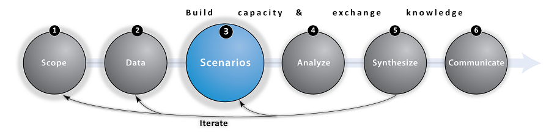

Step 3: Scenarios (Alternative Futures)

Overview and Goals
Scenarios are plausible representations of the future. Developing a set of alternative scenarios can be useful for examining how actions taken today may play out in the future. In the context of MSP, scenarios can be used to demonstrate how ecosystem service benefits will change under different management, development, restoration, or climate change alternatives and indicate the synergies and trade-offs in objectives among options. Scenarios provide an important tool for planning and designing interventions to optimize the multiple objectives identified during Scoping. Scenario analysis can help uncover unintended tradeoffs or surprising win-wins that are otherwise difficult to imagine when many human activities and social, economic, and ecological objectives interact in marine systems. Scenarios are most usefully developed as part of a stakeholder-driven process that elicits storylines with key drivers affecting alternative pathways to the future (Henrichs et al. 2010). Differences among stakeholders in their preferences for human use patterns and options for management or future climate conditions can be reflected in alternatives and then consequences for shared objectives are visualized as model outputs (Analyze & Synthesize steps). Scenario development can be an effective learning process for stakeholders, who can use results to evaluate whether policies secure ecosystem services under uncertain futures, or to consider new policies or management strategies. Spatially explicit scenarios can be generated from models (e.g., Henrichs et al. 2010), scenario tools (see tool links below), or expert elicitation.


Tips
- Alternative, spatially explicit scenarios should be distinct (see pg 5 of our Primer for a complete list of effective scenario characteristics), and at least 2 should be analyzed to understand potential effects of management, climate, or other global change drivers on objectives relative to baseline conditions
- Explore our compilation of use-cases (below) to help find a scenario development tool that matches your project needs
- Recognize that although it is a time consuming process to adequately incorporate a diverse range of stakeholder visions and values; the potential for building consensus around the ultimate plan is more likely with early participation from those who will be affected
MR: I RECOMMEND OMITTING THIS ‘CONFLICTS AND COMPATIBILITIES’ SUBSECTION. THIS TABLE COULD BE USEFUL, BUT DOESN’T SEEM WORTH HIGHLIGHTING HERE AS ONE WE NECESSARILY RECOMMEND OVER OTHER APPROACHES (E.G., HRA MODELS THESE CONFLICTS AND COMPATIBILITIES IN A MORE EXPLICIT WAY, AND THEN THERE ARE EVEN MORE COMPLEX MODELS ONE COULD USE). I’D SAY LET’S JUST INCLUDE THE REPORT IN THE LINKS BELOW.

Conflicts & Compatibilities
When multiple human activities are competing in space, it may be a useful to identify conflicts and compatibilities among ocean uses and across sectors. We include this exercise in the "Scenarios" step because alternative scenarios may result in different conflicts and varying compatibilities among uses. Click on the image below to download an Excel template and modify for your own use.

Scenario Development Tools and Use-Cases
Below we list some popular scenario development tools. Click on the sub-bullets to learn more about how they were applied in MSP use-cases.
- InSEAM is a free online map annotation tool enabling multiple users to draw features on a base map. These drawings and annotations can be organized and downloaded as digital layers to facilitate the scenario development process. We have found that people tend to trust data more when they participate in its compilation or collection where possible. Allowing people to get involved in ecosystem service citizen science can be an extremely useful means to collect data and develop a shared understanding of current ecosystem benefits, and how they may change over time. InSEAM requires an Internet connection so it may not be the right tool in remote places with limited bandwidth.
- SeaSketch is a pay-for-service tool for ocean planners, stakeholders and the public that enables participatory marine spatial planning processes
• North Pacific Coast – the Marine Planning Partnership (MaPP) is integrating Marxan outputs in their SeaSketch project. MaPP is using SeaSketch to draft protection management zones in four sub-regions, and discuss the implications of these with marine stakeholders.
• Hauraki Gulf (New Zealand) - SeaSketch is being used by a Stakeholder Working Group to create a marine spatial plan for the Hauraki Gulf Marine Park. This plan is being developed to ensure the long-term maintenance and enhancement of the Gulf’s cultural, environmental, economic, and social values.
- Habitat Priority Planner is part of NOAA’s Digital Coast Partnership, and aids in making decisions about conservation, restoration, and planning by providing a means for obtaining critical habitat analyses that are consistent, repeatable, and transparent.
- InVEST Scenario Generator provides a relatively simple method for generating future scenarios based on land use change suitability.
• Vietnam – the InVEST Scenario Generator was used to map changes in mangrove ecosystems under two future land use scenarios for the Ca Mau province of Vietnam.
- InVEST Habitat Risk Assessment (HRA) model captures explicitly how and where human activities affect habitat structure and function. The HRA model can be used to translate scenarios of human uses, activities, and future climate into spatially explicit consequences for habitat distribution and condition.
• Belize - InVEST HRA was used to assess the combined risk to habitats (coral reefs, mangrove forests and seagrass beds) from multiple ocean uses. These results were used to inform the design of the countryﾒs first Integrated Coastal Zone Management (ICZM) Plan (Arkema et al. 2014 & IN REVIEW —PNAS PAPER).
- Marxan with Zones facilitates design and configuration of protected area networks, to meet ecological, social, and economic objectives
•
St. Kitts and Nevis - Marxan with Zones generated a series of scenario-analysis maps and helped organize a wide range of information and assign actions to specific locations across the seascape. This tool was used to support the zoning decision-making process in St. Kitts and Nevis.
- TerrSet is a proprietary tool that allows users to rapidly analyze land cover change and simulate future land change scenarios.
- Coastal RIOS optimally sites habitat protection and restoration activities based on multiple planning objectives.
• West Florida - Coastal RIOS is helping assess proposed actions following the Deepwater Horizon oil spill in the Gulf of Mexico, including the identification of best places to protect or restore seagrass, oyster, marsh, and dune habitats while balancing coastal protection, tourism and recreation, and fisheries objectives.
- SLAMM simulates the dominant processes involved in wetland conversions and shoreline modifications during long-term sea level rise. The model produces maps of the distributions of wetlands under conditions of accelerated sea level rise and summarizes results in tabular and graphical form.

Frequently Asked Questions (FAQ)
Q: How do I get started developing scenarios for MSP?
A: Scenario development is dependent on location, partners, and objectives. Identification of goals, ecosystem-service objectives, and key human and global change drivers can occur through a stakeholder engagement process, using guidance from existing plans and reports, or a combination of approaches (McKenzie et al. 2013). Refer to our list of scenarios development tools for ways to get started on the technical work involved in translating scenarios into inputs for models in the next step--Analyze. For example, our Belize use-case (described below) used stakeholder engagement and a habitat risk assessment tool to draft and refine three alternative future scenarios.
KA: THESE CITATIONS ARE MORE ABOUT STAKEHOLDERS BEING INVOLVED IN SCIENCE-POLICY PROCESSES, BUT COULD BE USEFUL TO CITE.
Cash DW et al. (2003) Knowledge systems for sustainable development. PNAS 100:8086–8091.
Reid RS et al. (2009) Evolution of models to support community and policy action with science: Balancing pastoral livelihoods and wildlife conservation in savannas of East Africa. PNAS:pnas.0900313106.
Dalton TM (2005) Beyond Biogeography: a Framework for Involving the Public in Planning of U.S. Marine Protected Areas. Conserv Biol 19:1392–1401.
Q: Can Marxan with Zones or other tools be used in conjunction with InVEST models?
A: Marxan produces zoning configurations that achieve multiple planning objectives. InVEST can use zoning maps produced by Marxan (e.g., optimal locations for different sectoral uses) to assess outcomes for people based on the future changes to ecosystem structure and function resulting from activities allowed in the zones. [ADD SENTENCE GIVING EX OF WHERE MARXAN WITH ZONES WAS USED AS AN INPUT TO INVEST—IN MAPP?] NatCap has used various scenario tools as a means to create inputs for InVEST models. For example, we applied the SLAMM model (Sea Level Affecting Marshes Model) in the US Gulf of Mexico to produce maps showing where salt marshes migrate under different sea level rise scenarios for the year 2100. These maps were in turn used as inputs to InVEST’s coastal vulnerability and blue carbon models (see Analyze -- NOT SURE EXACTLY WHY WE LINK TO ANALYZE HERE. IS THERE A LINK OR CITATION FOR THE SLAMM-INVEST WORK?).
KA: I THINK IT SHOULD BE COASTAL PROTECTION – WASN’T IT DONE FOR THE GALVESTON AND FREEPORT WORK?
Q: When are my scenarios final?
A: After preliminary analyses and visualization of the consequences of scenarios for objectives, scenarios can be iteratively refined to better reflect plausible or desired alternative futures. Throughout the scenario development process, continue consulting stakeholders and local experts to ensure that your scenarios are plausible, desirable, and will help your team produce information that can answer your specific research questions (e.g., Arkema et al. 2014 in review).

Links
- Arkema, Katie K., et al. "Assessing habitat risk from human activities to inform coastal and marine spatial planning: a demonstration in Belize." Environmental Research Letters 9.11 (2014): 114016. doi:10.1088/1748-9326/9/11/114016
- Arkema, Katie et al. PNAS paper 2015
- Tradeoff! - A series of simple games developed by the Natural Capital Project that challenges participants to consider the consequences of development on environment and how these actions will impact the benefits ecosystems provide to people
- Scenario Primer - A quick guide that introduces scenarios and how they can be used with InVEST. It also provides guidance on what makes an effective scenario, suggests goals and methods for developing scenarios, and illustrates how to convert scenarios into maps in InVEST.
- Scenario Guidance and Case Studies - A detailed resource for practitioners who want to assess ecosystem services under alternative scenarios. Drawing on case experiences, it provides guidance on scenario types and methods, engaging stakeholders, and creating scenario maps.
- WWF's Future Trends in the Baltic Sea report

Use-Cases
Use the expand [+] button to learn more about this scenario design step in the context of select NatCap use-cases.top
SEE GITHUB ISSUE #6
New England
During meetings with stakeholders and agencies working in the New England area, it became clear that the word "scenario" was not the preferred terminology to describe future ocean uses. NatCap continues work in the region to help provide decision makers with scientifically valid information to use for broader marine planning efforts. See our New England use-case for more details.
Belize
Scenarios reflecting three plausible futures for Belize’s coastal development in the year 2025 were developed through a succession of government-led stakeholder meetings and workshops with communities along the entire coastline. These alternative scenarios are based on maps of the current distribution of ocean and coastal activities, existing and pending government plans, and stakeholders' values and preferences. The following set of rotating images describes this stakeholder-driven process where our government partner, the Coastal Zone Management and Institute (CZMAI), mapped three zoning configurations describing the location and extent of future human uses.